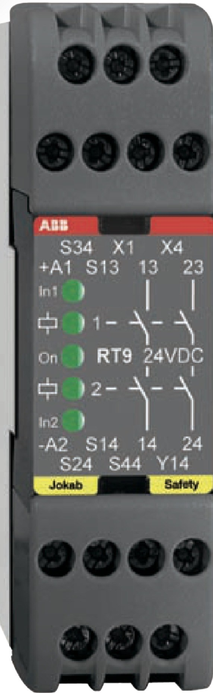

السيفتي PLC · الدرس 3 من 9
الـ RT9 ريلاي أمان عرضه 22.5 مللي، يراقب وظيفة أمان واحدة (طوارئ أو بوابة أو ستارة) ويغلق خرجين NO يشغّلان الكونتاكتورات. مصنّف حتى Cat. 4 / PL e / SIL 3.

على واجهة الريلاي 5 مصابيح: On، وIn1 وIn2 للدخل، و1 و2 للخرج.
On مضيء يعني أن التغذية سليمة، وإذا كان يومض فالجهد منخفض أو هناك حمل زائد على S13. In1 وIn2 يعني أن القناتين مغلقتان بشكل صحيح. و1 و2 يعني أن الخرجين 13-14 و23-24 مغلقان.
هناك 5 طرق، وكل طريقة تعطي Category مختلفًا:
في توصيل القناتين: يجب أن تُفتح القناتان وتُغلقا مجددًا قبل أي ريست جديد.
الريست اليدوي المراقَب: زر RESET بين +24V وX1، ويعمل الريلاي عند فتح الزر. والريست الأوتوماتيك: بريدج بين A1 وX1 وX4، ولا يُستخدم إلا إذا سمح تقييم المخاطر.
تلامسا الـ NC في K1 وK2 يُوصَّلان على التوالي مع الريست: إذا كان كونتاكتور ملتحمًا فلا يصل الريست.
يدخل هذا الرقم في حساب مسافة أمان الستارة.
اضغط الطوارئ أو افتح بابًا وشاهد أين ينقطع التيار، ثم أعد كل شيء واضغط RESET. أو اضغط «شاهد المثال».
أجب إجابة صحيحة عن 5 من 6 على الأقل ليُسجَّل الدرس مكتملًا.
الأرقام والأطراف هنا من كتالوجات ABB (Pluto Hardware Manual وProgramming Manual وRT9). قبل التطبيق على ماكينة حقيقية ارجع إلى الكتالوج وتقييم المخاطر الخاص بالماكينة. يُحفظ تقدّمك على هذا الجهاز فقط.
© LearnElectricals